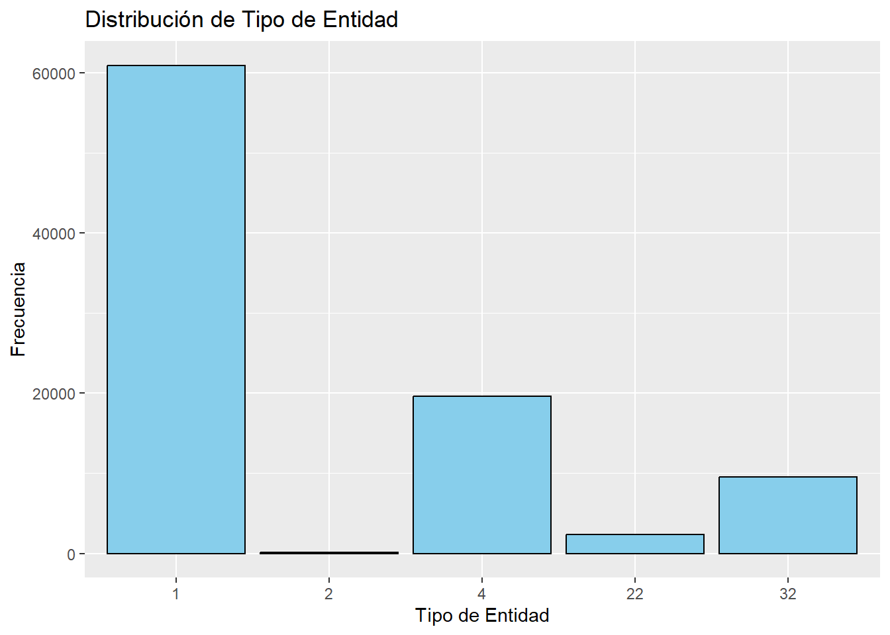
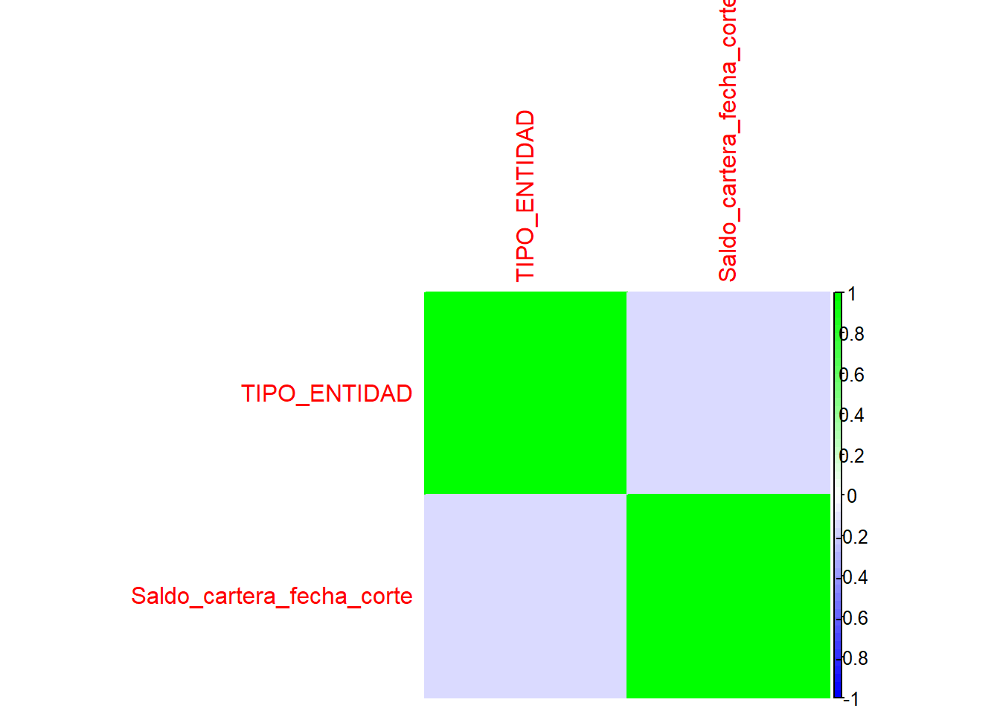

4 Analisis exploratorio de datos
- Exploración de datos
## spc_tbl_ [92,568 × 34] (S3: spec_tbl_df/tbl_df/tbl/data.frame)
## $ TIPO_ENTIDAD : num [1:92568] 1 1 1 1 1 1 1 1 1 1 ...
## $ CODIGO_ENTIDAD : num [1:92568] 58 7 23 12 54 30 2 39 1 49 ...
## $ NOMBREENTIDAD : chr [1:92568] "Coopcentral" "Bancolombia" "Banco De Occidente" "Banco Gnb Sudameris" ...
## $ FECHA_CORTE : chr [1:92568] "30/09/2023" "30/09/2023" "31/01/2015" "30/09/2023" ...
## $ UNICAP : num [1:92568] 3 22 1 19 1 1 5 6 22 1 ...
## $ DESCRIP_UC : chr [1:92568] "LIBRE INVERSIÓN" "CARTERA COMERCIAL MICROEMPRESA" "CRÉDITO ROTATIVO" "CARTERA COMERCIAL CORPORATIVO" ...
## $ RENGLON : num [1:92568] 5 5 5 5 5 5 5 5 5 5 ...
## $ DESC_RENGLON : chr [1:92568] "LIBRE INVERSIÓN" "MICROEMPRESA" "CRÉDITO ROTATIVO TOTAL" "CORPORATIVO" ...
## $ Saldo_cartera_fecha_corte : num [1:92568] 3.76e+10 2.98e+12 1.08e+11 4.18e+12 2.44e+11 ...
## $ Vigente : num [1:92568] 3.34e+10 2.59e+12 1.04e+11 4.15e+12 2.27e+11 ...
## $ Vencida_1_2_Meses : num [1:92568] 1.29e+09 0.00 1.36e+09 0.00 6.33e+09 ...
## $ Vencida_2_3_Meses : num [1:92568] 3.19e+08 0.00 8.46e+08 0.00 2.69e+09 ...
## $ Vencida_1_3_Meses : num [1:92568] 0.00 1.08e+11 0.00 0.00 0.00 ...
## $ Vencida_3_4_Meses : num [1:92568] 0 0 0 0 0 0 0 0 0 0 ...
## $ Vencida_mas_4_Meses : num [1:92568] 0 0 0 0 0 0 0 0 0 0 ...
## $ Vencida_3_6_Meses : num [1:92568] 4.76e+08 9.99e+10 1.24e+09 6.25e+08 3.89e+09 ...
## $ Vencida_mas_6_meses : num [1:92568] 2.13e+09 0.00 6.64e+08 0.00 3.59e+09 ...
## $ Vencida_1_4_meses : num [1:92568] 0 0 0 0 0 0 0 0 0 0 ...
## $ Vencida_4_6_meses : num [1:92568] 0 0 0 0 0 0 0 0 0 0 ...
## $ Vencida_6_12_meses : num [1:92568] 0.00 1.12e+11 0.00 2.14e+09 0.00 ...
## $ Vencida_12_18_meses : num [1:92568] 0 0 0 0 0 0 0 0 0 0 ...
## $ Vencida_mas_12_meses : num [1:92568] 0.00 7.11e+10 0.00 2.65e+10 0.00 ...
## $ Vencida_mas_18_meses : num [1:92568] 0 0 0 0 0 0 0 0 0 0 ...
## $ Num_clientes_mora_30_dias : num [1:92568] 389 22091 425 5 2295 ...
## $ Calificacion_Riesgo_A_Num_clientes: num [1:92568] 1257 127937 9723 139 32098 ...
## $ Calificacion_Riesgo_A_Saldo : num [1:92568] 3.19e+10 2.43e+12 1.00e+11 4.04e+12 2.25e+11 ...
## $ Calificacion_Riesgo_B_Num_clientes: num [1:92568] 66 7317 324 7 951 ...
## $ Calificacion_Riesgo_B_Saldo : num [1:92568] 1.75e+09 1.27e+11 2.92e+09 3.53e+10 5.97e+09 ...
## $ Calificacion_Riesgo_C_Num_clientes: num [1:92568] 44 4080 207 12 848 ...
## $ Calificacion_Riesgo_C_Saldo : num [1:92568] 7.81e+08 6.89e+10 1.94e+09 4.77e+10 5.03e+09 ...
## $ Calificacion_Riesgo_D_Num_clientes: num [1:92568] 101 12891 165 3 521 ...
## $ Calificacion_Riesgo_D_Saldo : num [1:92568] 8.59e+08 2.09e+11 1.62e+09 1.14e+10 3.61e+09 ...
## $ Calificacion_Riesgo_E_Num_clientes: num [1:92568] 232 2138 144 4 520 ...
## $ Calificacion_Riesgo_E_Saldo : num [1:92568] 2.31e+09 1.42e+11 1.54e+09 4.79e+10 4.30e+09 ...
## - attr(*, "spec")=
## .. cols(
## .. TIPO_ENTIDAD = col_double(),
## .. CODIGO_ENTIDAD = col_double(),
## .. NOMBREENTIDAD = col_character(),
## .. FECHA_CORTE = col_character(),
## .. UNICAP = col_double(),
## .. DESCRIP_UC = col_character(),
## .. RENGLON = col_double(),
## .. DESC_RENGLON = col_character(),
## .. `(1) Saldo de la cartera a la fecha de corte del reporte` = col_double(),
## .. `(2) Vigente` = col_double(),
## .. `(3) Vencida 1-2 Meses` = col_double(),
## .. `(4) Vencida 2-3 Meses` = col_double(),
## .. `(5) Vencida 1-3 Meses` = col_double(),
## .. `(6) Vencida 3-4 Meses` = col_double(),
## .. `(7) Vencida > de 4 Meses` = col_double(),
## .. `(8) Vencida 3-6 Meses` = col_double(),
## .. `(9) Vencida +6 meses` = col_double(),
## .. `(10) Vencida 1-4 meses` = col_double(),
## .. `(11) Vencida 4-6 meses` = col_double(),
## .. `(12) Vencida 6-12 meses` = col_double(),
## .. `(13) Vencida 12-18 meses` = col_double(),
## .. `(14) Vencida > 12 meses` = col_double(),
## .. `(15) Vencida > 18 meses` = col_double(),
## .. `(16) Número de clientes Mora > 30 días` = col_double(),
## .. `(17) Calificación de Riesgo A / Número de Clientes` = col_double(),
## .. `(18) Calificación de Riesgo A / Saldo` = col_double(),
## .. `(19) Calificación de Riesgo B / Número de Clientes` = col_double(),
## .. `(20) Calificación de Riesgo B / Saldo` = col_double(),
## .. `(21) Calificación de Riesgo C / Número de Clientes` = col_double(),
## .. `(22) Calificación de Riesgo C / Saldo` = col_double(),
## .. `(23) Calificación de Riesgo D / Número de Clientes` = col_double(),
## .. `(24) Calificación de Riesgo D / Saldo` = col_double(),
## .. `(25) Calificación de Riesgo E / Número de Clientes` = col_double(),
## .. `(26) Calificación de Riesgo E / Saldo` = col_double()
## .. )
## - attr(*, "problems")=<externalptr>## # A tibble: 6 × 34
## TIPO_ENTIDAD CODIGO_ENTIDAD NOMBREENTIDAD FECHA_CORTE UNICAP DESCRIP_UC
## <dbl> <dbl> <chr> <chr> <dbl> <chr>
## 1 1 58 Coopcentral 30/09/2023 3 LIBRE INVE…
## 2 1 7 Bancolombia 30/09/2023 22 CARTERA CO…
## 3 1 23 Banco De Occidente 31/01/2015 1 CRÉDITO RO…
## 4 1 12 Banco Gnb Sudameris 30/09/2023 19 CARTERA CO…
## 5 1 54 Bancoomeva 31/01/2015 1 CRÉDITO RO…
## 6 1 30 Banco Caja Social 31/01/2015 1 CRÉDITO RO…
## # ℹ 28 more variables: RENGLON <dbl>, DESC_RENGLON <chr>,
## # Saldo_cartera_fecha_corte <dbl>, Vigente <dbl>, Vencida_1_2_Meses <dbl>,
## # Vencida_2_3_Meses <dbl>, Vencida_1_3_Meses <dbl>, Vencida_3_4_Meses <dbl>,
## # Vencida_mas_4_Meses <dbl>, Vencida_3_6_Meses <dbl>,
## # Vencida_mas_6_meses <dbl>, Vencida_1_4_meses <dbl>,
## # Vencida_4_6_meses <dbl>, Vencida_6_12_meses <dbl>,
## # Vencida_12_18_meses <dbl>, Vencida_mas_12_meses <dbl>, …## TIPO_ENTIDAD CODIGO_ENTIDAD NOMBREENTIDAD FECHA_CORTE
## Min. : 1.000 Min. : 1.00 Length:92568 Length:92568
## 1st Qu.: 1.000 1st Qu.: 7.00 Class :character Class :character
## Median : 1.000 Median : 30.00 Mode :character Mode :character
## Mean : 5.366 Mean : 36.64
## 3rd Qu.: 4.000 3rd Qu.: 54.00
## Max. :32.000 Max. :125.00
## UNICAP DESCRIP_UC RENGLON DESC_RENGLON
## Min. : 1.00 Length:92568 Min. : 5.000 Length:92568
## 1st Qu.: 4.00 Class :character 1st Qu.: 5.000 Class :character
## Median :15.00 Mode :character Median : 5.000 Mode :character
## Mean :15.21 Mean : 7.046
## 3rd Qu.:25.00 3rd Qu.: 5.000
## Max. :32.00 Max. :25.000
## Saldo_cartera_fecha_corte Vigente Vencida_1_2_Meses
## Min. :0.000e+00 Min. :0.000e+00 Min. :0.000e+00
## 1st Qu.:4.018e+09 1st Qu.:3.662e+09 1st Qu.:0.000e+00
## Median :5.933e+10 Median :5.550e+10 Median :0.000e+00
## Mean :7.639e+11 Mean :7.284e+11 Mean :4.252e+09
## 3rd Qu.:5.251e+11 3rd Qu.:4.917e+11 3rd Qu.:1.956e+08
## Max. :3.719e+13 Max. :3.668e+13 Max. :1.223e+12
## Vencida_2_3_Meses Vencida_1_3_Meses Vencida_3_4_Meses
## Min. :0.000e+00 Min. :0.000e+00 Min. :0.000e+00
## 1st Qu.:0.000e+00 1st Qu.:0.000e+00 1st Qu.:0.000e+00
## Median :0.000e+00 Median :0.000e+00 Median :0.000e+00
## Mean :2.532e+09 Mean :3.243e+09 Mean :1.065e+08
## 3rd Qu.:9.110e+07 3rd Qu.:0.000e+00 3rd Qu.:0.000e+00
## Max. :9.131e+11 Max. :6.344e+11 Max. :9.723e+10
## Vencida_mas_4_Meses Vencida_3_6_Meses Vencida_mas_6_meses
## Min. :0.000e+00 Min. :0.000e+00 Min. :0.000e+00
## 1st Qu.:0.000e+00 1st Qu.:0.000e+00 1st Qu.:0.000e+00
## Median :0.000e+00 Median :7.534e+03 Median :0.000e+00
## Mean :6.854e+08 Mean :6.708e+09 Mean :2.895e+09
## 3rd Qu.:0.000e+00 3rd Qu.:1.610e+09 3rd Qu.:1.153e+07
## Max. :4.323e+11 Max. :1.552e+12 Max. :4.622e+11
## Vencida_1_4_meses Vencida_4_6_meses Vencida_6_12_meses
## Min. :0.000e+00 Min. :-6.891e+07 Min. :0.000e+00
## 1st Qu.:0.000e+00 1st Qu.: 0.000e+00 1st Qu.:0.000e+00
## Median :0.000e+00 Median : 0.000e+00 Median :0.000e+00
## Mean :3.260e+09 Mean : 5.632e+08 Mean :3.633e+09
## 3rd Qu.:0.000e+00 3rd Qu.: 0.000e+00 3rd Qu.:2.254e+08
## Max. :7.775e+11 Max. : 1.780e+11 Max. :5.268e+11
## Vencida_12_18_meses Vencida_mas_12_meses Vencida_mas_18_meses
## Min. :0.000e+00 Min. :0.000e+00 Min. :0.000e+00
## 1st Qu.:0.000e+00 1st Qu.:0.000e+00 1st Qu.:0.000e+00
## Median :0.000e+00 Median :0.000e+00 Median :0.000e+00
## Mean :3.877e+08 Mean :6.187e+09 Mean :9.637e+08
## 3rd Qu.:0.000e+00 3rd Qu.:0.000e+00 3rd Qu.:0.000e+00
## Max. :8.419e+10 Max. :8.902e+11 Max. :2.331e+11
## Num_clientes_mora_30_dias Calificacion_Riesgo_A_Num_clientes
## Min. : 0 Min. : 0
## 1st Qu.: 1 1st Qu.: 20
## Median : 27 Median : 434
## Mean : 2689 Mean : 35599
## 3rd Qu.: 514 3rd Qu.: 6385
## Max. :191385 Max. :1509442
## Calificacion_Riesgo_A_Saldo Calificacion_Riesgo_B_Num_clientes
## Min. :0.000e+00 Min. : 0
## 1st Qu.:3.291e+09 1st Qu.: 0
## Median :5.248e+10 Median : 15
## Mean :6.952e+11 Mean : 1313
## 3rd Qu.:4.656e+11 3rd Qu.: 223
## Max. :3.555e+13 Max. :154695
## Calificacion_Riesgo_B_Saldo Calificacion_Riesgo_C_Num_clientes
## Min. :0.000e+00 Min. : 0
## 1st Qu.:0.000e+00 1st Qu.: 0
## Median :8.442e+08 Median : 7
## Mean :2.205e+10 Mean : 1130
## 3rd Qu.:1.133e+10 3rd Qu.: 125
## Max. :1.731e+12 Max. :947270
## Calificacion_Riesgo_C_Saldo Calificacion_Riesgo_D_Num_clientes
## Min. :0.000e+00 Min. : 0
## 1st Qu.:0.000e+00 1st Qu.: 0
## Median :3.677e+08 Median : 9
## Mean :1.431e+10 Mean : 1060
## 3rd Qu.:6.193e+09 3rd Qu.: 154
## Max. :1.710e+12 Max. :139192
## Calificacion_Riesgo_D_Saldo Calificacion_Riesgo_E_Num_clientes
## Min. :0.000e+00 Min. : 0
## 1st Qu.:0.000e+00 1st Qu.: 0
## Median :4.271e+08 Median : 5
## Mean :1.688e+10 Mean : 1022
## 3rd Qu.:6.621e+09 3rd Qu.: 142
## Max. :2.350e+12 Max. :124703
## Calificacion_Riesgo_E_Saldo
## Min. :0.000e+00
## 1st Qu.:0.000e+00
## Median :1.999e+08
## Mean :1.475e+10
## 3rd Qu.:5.705e+09
## Max. :2.093e+12## [1] 92568 34- Grafica de la distribución de la variable categórica TIPO_ENTIDAD.
La mayoría de las entidades son del tipo 1, seguido de las entidades tipo 4.
ggplot(df, aes(x = factor(TIPO_ENTIDAD))) +
geom_bar(fill = "skyblue", color = "black") +
labs(x = "Tipo de Entidad", y = "Frecuencia", title = "Distribución de Tipo de Entidad") Realizamos primero una Revisión de datos faltantes, para verificar que nuestra base de datos este completa.
# Utiliza la función colSums() junto con is.na() para calcular el número de NA por columna
num_missing <- colSums(is.na(df))
# Muestra el número de datos faltantes por variable
print(num_missing)## TIPO_ENTIDAD CODIGO_ENTIDAD
## 0 0
## NOMBREENTIDAD FECHA_CORTE
## 0 0
## UNICAP DESCRIP_UC
## 0 0
## RENGLON DESC_RENGLON
## 0 0
## Saldo_cartera_fecha_corte Vigente
## 0 0
## Vencida_1_2_Meses Vencida_2_3_Meses
## 0 0
## Vencida_1_3_Meses Vencida_3_4_Meses
## 0 0
## Vencida_mas_4_Meses Vencida_3_6_Meses
## 0 0
## Vencida_mas_6_meses Vencida_1_4_meses
## 0 0
## Vencida_4_6_meses Vencida_6_12_meses
## 0 0
## Vencida_12_18_meses Vencida_mas_12_meses
## 0 0
## Vencida_mas_18_meses Num_clientes_mora_30_dias
## 0 0
## Calificacion_Riesgo_A_Num_clientes Calificacion_Riesgo_A_Saldo
## 0 0
## Calificacion_Riesgo_B_Num_clientes Calificacion_Riesgo_B_Saldo
## 0 0
## Calificacion_Riesgo_C_Num_clientes Calificacion_Riesgo_C_Saldo
## 0 0
## Calificacion_Riesgo_D_Num_clientes Calificacion_Riesgo_D_Saldo
## 0 0
## Calificacion_Riesgo_E_Num_clientes Calificacion_Riesgo_E_Saldo
## 0 0#Correlación entre variables numéricas
correlation_matrix <- cor(df[, c("TIPO_ENTIDAD", "Saldo_cartera_fecha_corte")])
print(correlation_matrix)## TIPO_ENTIDAD Saldo_cartera_fecha_corte
## TIPO_ENTIDAD 1.0000000 -0.1446022
## Saldo_cartera_fecha_corte -0.1446022 1.0000000# Visualiza la matriz de correlación
corrplot(correlation_matrix, method = "color", col = colorRampPalette(c("blue", "white", "green"))(50))
Ahora ya convertiremos fecha de corte a una variable tipo fecha.